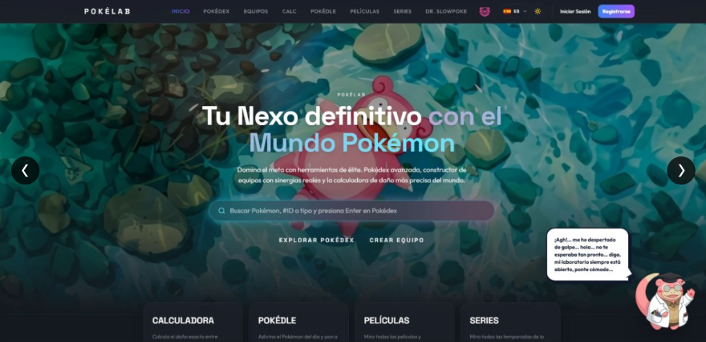
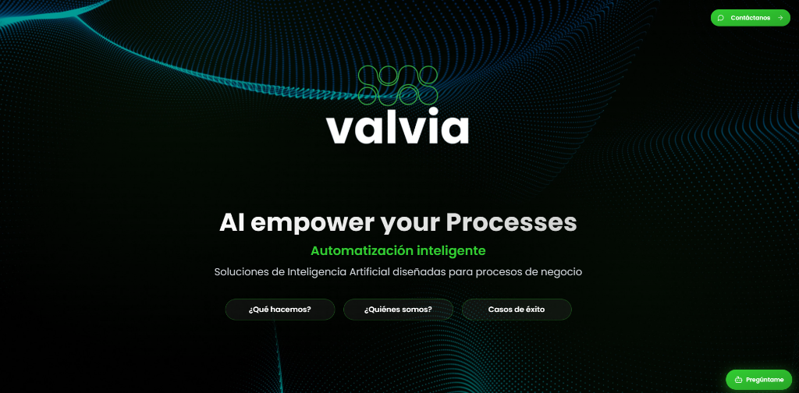

PokéLab
Aplicación web con Pokédex, constructor de equipos, calculadora de daño y el minijuego Pokédle. Frontend en React y TypeScript sobre una API en Spring Boot con PostgreSQL.
- React
- TypeScript
- Spring Boot
- PostgreSQL
Técnico en sistemas, desarrollo y automatización con IA
Titulado en DAM y SMR. Perfil técnico que une sistemas y redes, desarrollo de aplicaciones y automatización de procesos con IA. Experiencia con workflows de n8n, APIs REST y despliegue en cloud, además de soporte técnico y mantenimiento de redes.

Aplicación web con Pokédex, constructor de equipos, calculadora de daño y el minijuego Pokédle. Frontend en React y TypeScript sobre una API en Spring Boot con PostgreSQL.

Web de Valvia, empresa de automatización con IA. Diseño de la web y desarrollo de su asistente con IA, que responde las dudas de los visitantes.
Automatización de procesos con workflows de n8n que integran modelos de IA, APIs REST y servicios cloud.
Programación, bases de datos, desarrollo web y móvil, metodologías ágiles. Proyecto final: PokéLab.
Soporte técnico, gestión de redes y mantenimiento de equipos, trabajando con perfiles senior y trato directo con cliente.
Hardware, redes, sistemas operativos y soporte técnico.
Para cualquier consulta, escríbeme o descarga mi CV.